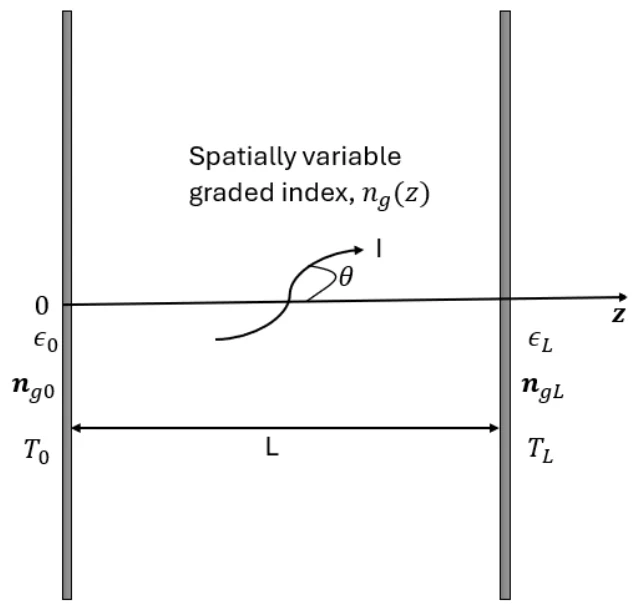
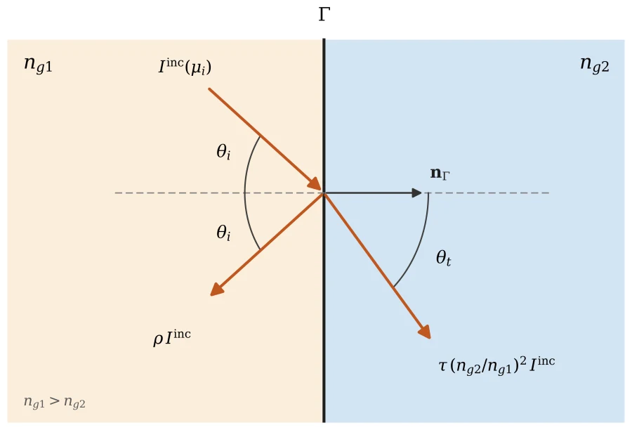
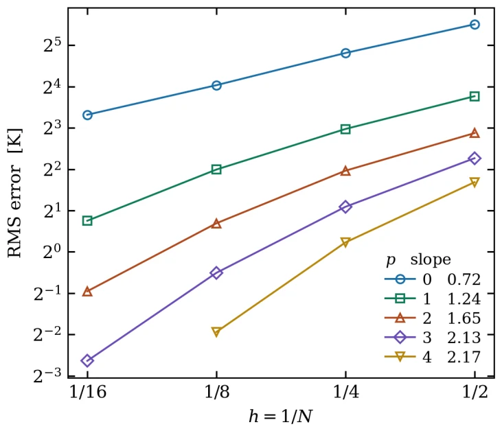
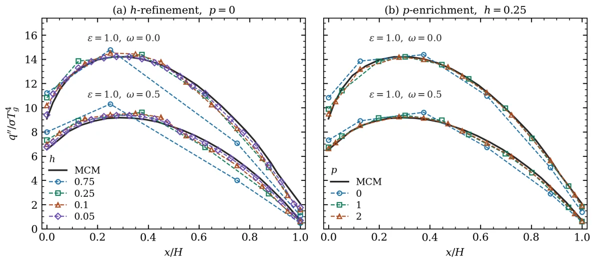

Manuscript, 2026. With Hang Wang, Reza Abedi, and Saba Mudaliar.
Radiation that bends: graded-index media
When a medium’s refractive index changes with position, rays curve and the radiative transfer equation gains a derivative in angle. Most solvers approximate that term by differencing between fixed directions, which caps angular accuracy no matter how accurate the spatial scheme is. I discretize space and angle on equal footing with a space-angle discontinuous Galerkin method, so ray bending is handled by an upwind flux in angle at the same order as spatial transport. Fresnel reflection and transmission at an index jump go through the same flux.
- Verified with manufactured solutions, converging at the optimal rate p + 1 for polynomial orders 0 to 3.
- Showed that in an optically thin slab the temperature profile is set by ray turning, not by the index itself, which gives a closed-form reference solution.
- Wall heat fluxes in 2D graded enclosures agree with finite volume and Monte Carlo benchmarks to within about 1% and 2%.







